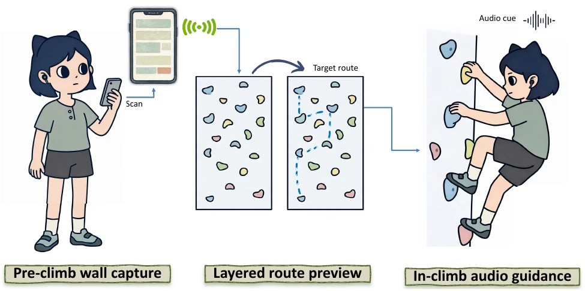

ACM ASSETS 2026 · First author
HoldLight
Layered route previews and next-hold audio guidance for blind and low-vision climbers.
- My contribution
- Conceived and led system development; designed and conducted a counterbalanced mixed-method study with 12 blind and low-vision climbers.
- Research finding
- In a controlled indoor study, participants had higher route-understanding scores and needed fewer routine human information-support interventions than with on-demand human support. Human safety support remained available.